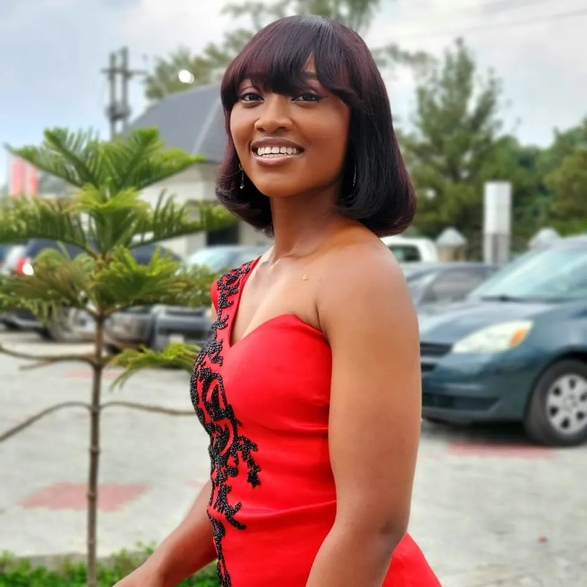

Bachelor's Degree in Computer Science. Second class upper division

An ambitious and goal oriented individual with 1 year experience in creating and executing digital marketing strategies, graphics design, email marketing, creating contents and cold calling. Intuitively and creatively managing marketing campaigns while building positive relationships with clients, colleagues and senior executives. Looking to work with great minds and teams in order to complete projects and achieve set Organisational goals.
EDUCATION
MAX Business School (In View)
Msc. Digital Marketing
Abia State University (2016 - 2020)
Bsc. in Computer Science
WORK EXPERIENCE
Field and Digital Marketer (February, 2023 - July, 2023)
Mudiame International Limited - PortHarcourt, Rivers State
Research new leads, ascertain potential clients, follow up and convert.
Reach potential clients by cold calling and email marketing
Writing and sending out proposals.
Delivering compelling marketing pitch and presentations to target audience.
Creation and publication of visually appealing and attention-grabbing advertising materials.
Manage Company's media and madia activities
Organising and executing marketing campaigns.
Creation of digital marketing strategy to attract online leads daily.
IT Support (July, 2019 - December, 2019)
Department of Petroleum Resources (DPR) - Lagos State
Registering and responding to employee requests.
Installation and configuration of computer hardware, software, operating sytems, networks and printers.
Monitoring and maintaining computer systems and networks.
Providing technical support accross teams.
Maintaining office devices
Responding to employee complaints in a timely manner.
SKILLS
Hard Skills
Email marketing
Social media marketing/advertising
Creativity
Content marketing
Graphic design
Strategic thinking
Customer relationship management
Tools
Canva
Wordpress
Google
Capcut
PixelLab
ADDITIONAL ACTIVITIES
Assistant Course Representative (2016 - 2020)
Liased between coursemates and lecturers to proffer accurate information.
Obtained feedback from coursemates to improve experience.
Provided consistent support maintaining coursemates' satisfaction.
Sales Representative
Provided adequate support to customers by answering questions and proffering best suited solutions.
Ensured customer satisfaction and increased sales daily.